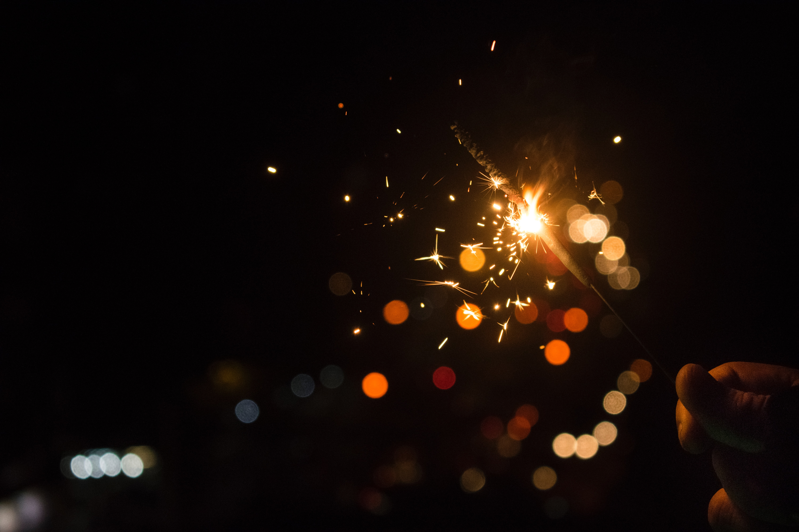
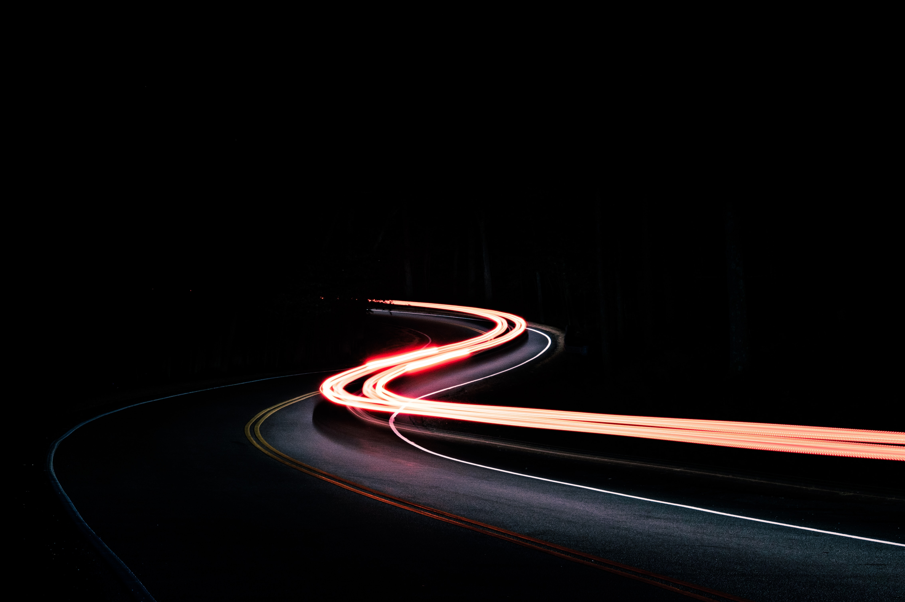

My favorite movie is Waiting for Guffman. It is a mockumentary documenting of the process of a small southern town's original theatre production, "Red, White, & Blaine," which is being mounted to celebrate the town's sesquicentennial (that's 150 years!) anniversary. It has a rag-tag cast of characters who are quirky and relatable. Especially if you're a theatre nerd. You can watch the movie trailer on YouTube.
My favorite artist is Imogen Heap. She is, in my opinion, a pioneer in the alt-electro-pop movement. Her music is hip and inventive. For more info, check out Imogen's website. If you like that, check out some of her earlier work with Guy Sigsworth and the group Frou Frou.
I love food. You might go so far as to say that preparing food for others is one of my love languages. Here are three dishes, to which, even if I'm not hungry, I'll not say, "No thanks."
My photographer friends tell me that good photographs are just capturing light at it's best. My favorite images are those that focus on the light and not the object.
 My favorite books are actually scripts. I won't spoil them. Read them for yourself and be transported. Here are two to get you started.
| Script Name | Author | Synopsis |
|---|---|---|
| Three Tall Women | Edward Albee | Synopsis at DPS |
| August: Osage County | Tracy Letts | Synopsis at DPS |